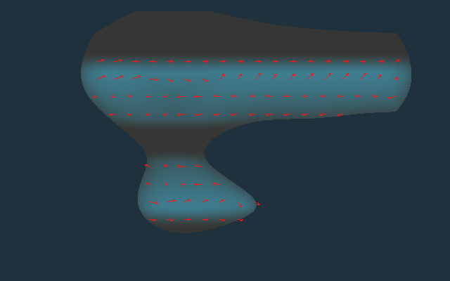

Geo
World Generator
Phase 3.2 Lab
返回世界总览
Phase 3.2 · 季风驱动的暖 / 冷季降水
Thermal Contrast → Seasonal Wind → Seasonal Rainfall
这里不是游戏内动态四季。
GeoWorld 只用“当地暖季 / 冷季”两个代表态计算长期季节性。北半球与南半球各自的暖季都统一显示为 Summer，避免把月份硬编码进世界模型。
① 季节温差
陆地内部通常大于海洋
② 当地暖季温度
Annual + seasonal amplitude
③ 当地冷季温度
Annual - seasonal amplitude
④ 季风指数
陆海热力差 + 纬度 + 海洋可达性
⑤ 暖季季风
热大陆吸引海洋空气向陆

⑥ 冷季季风
冷大陆高压推动空气离陆
⑦ 暖季降水
暖季风场 + 暖季水汽输送
⑧ 冷季降水
冷季风场 + 冷季水汽输送
⑨ 降水季节性
0=全年均匀 · 1=高度集中
⑩ 季风降水占比
强季风 + 暖季降水盈余